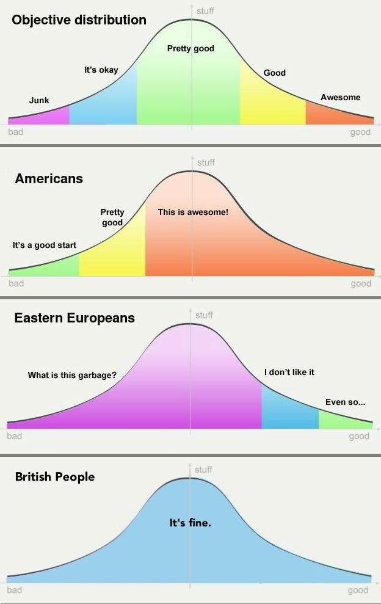

Why Write
Q: Why write in public when you can write in private?
A: Yes I have a plain text file ~/logBook for simple note taking. That just works, no fuss.
I do minimal extra work to have it versioned in $HOME/.git, and structured in sections FIXME / TODO / DONE / DONTDO.
However. I catch myself bothering people close to me, family and friends, with things I find interesting to talk about and or discuss, that they find less interesting even boring. :-)
So these home pages are written is to take those themes out of my system, while not bothering any of the above mentioned. Only people to read will be online randoms that stumble on this by their own volition - so fine.
Q: Why not use social media, social networks?
A: Yes I do use social networks - most often X @ljupc0, sometimes Bsky @ljupco.bsky.social, rarely Mastodon @ljupco, and lately I even typed couple of "Old Man Shouts at the Sky" rants on Substack @ljubomirjosifovski to get them out of my system.
There is tons of interesting stuff there, mostly on X due to its user size and "the Iron Law of public N^2 square". I post there, but it seems mostly replies and comments to what other post. Rarely I have something super interesting and urgent that I want to communicate to the world by having the algofeed stuff it into people's timelines.
Then while doom scrolling I stumbled upon -
https://x.com/CJHandmer/status/1839816029473779775
Casey Handmer, PhD @CJHandmer
This is your periodic reminder that you should write a blog. It doesn't have to be fancy, it doesn't have to be well-edited. It just has to be something you can cumulatively add to over time. It's easiest to write about stuff you like, and ignore your non-existent audience.
12:54 AM · Sep 28, 2024
My initial thoughts were sceptical still - why do it, when there are
- logBook for things private;
- X/Bsky/... for things public; and even
- ChatGPT when audience of >1 is needed, while not exactly needing to broadcast to the whole wide world.
But then I've come around! I've learned to like ethese pages, my online $HOME in the cyberspace. :-) In addition to them being useful in laying ideas to rest, and moving on. Being bothered for a period of time by the same ideas makes for a boring living. Writing it down here in multiple versions and longer form that can be come back to, add to, revisit old - I like that. It's not one-off, fire-and-forget of online quick paced quanta of ideas. I can only ever hold limited number of ideas in my head at the same time, and not juggle them for long before they crash and are forgotten. This goes towards ensuring 1) they are not lost, "like tears in the the rain"; and 2) can be turned over faster, juggle different balls up there. :-)
Further - it's not only "unload to writing so my head can fill up again". The act of formulating ones maybe vague thoughts and ideas, contributes to their formation. It's not like that what I say, exists inside me fully formed prior. And now I just broadcast it to the world. No - until we communicate out clearly, ideas we communicate are not fully formed. The process of communication contributes meaningfully to the process of creation, is part of it.
Further, with making them public, there will be other people around, that may read, and come back to push back and even judge me! So there is an aspect of Bet-On-It, take some risk, (even if a tiny risk), or being criticised, or even ridiculed. Concentrates the mind. Motivates the self to some self-discipline. A bit of QC - Quality Control not the worst thing to expose oneself willingly. Most thoughts I have, as with most of us humans - are ofc rubbish, better forgotten.
Since starting this, I came across Simon Willison’s blog -
"You should start a blog. Having your own little corner of the internet is good for the soul!"
...and now I think there is truth in that.
Another "please do write - it's worth it to you and us too" Why write a blog at all? by Adam Singer since articulates it better than I ever could myself.
--
LJ HPD Sun 6 Oct 22:50:39 BST 2024